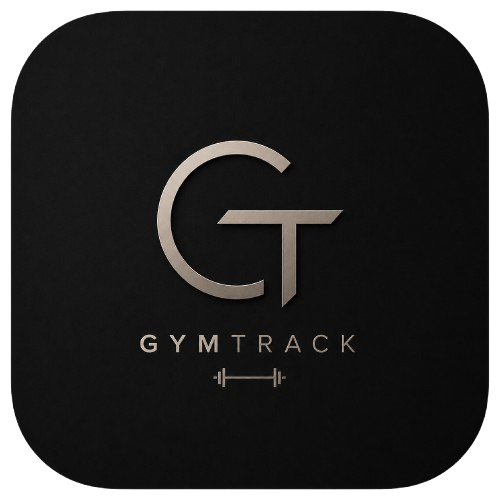
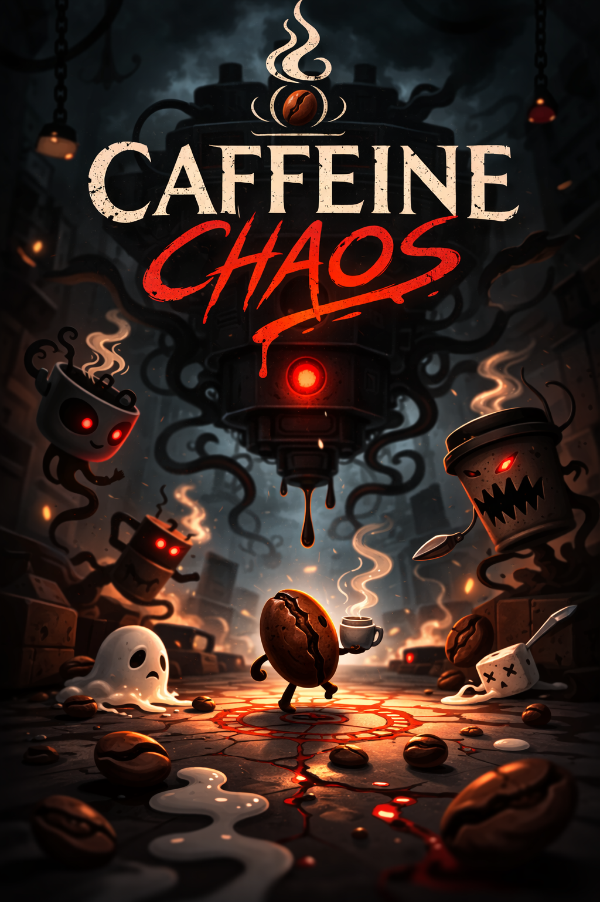
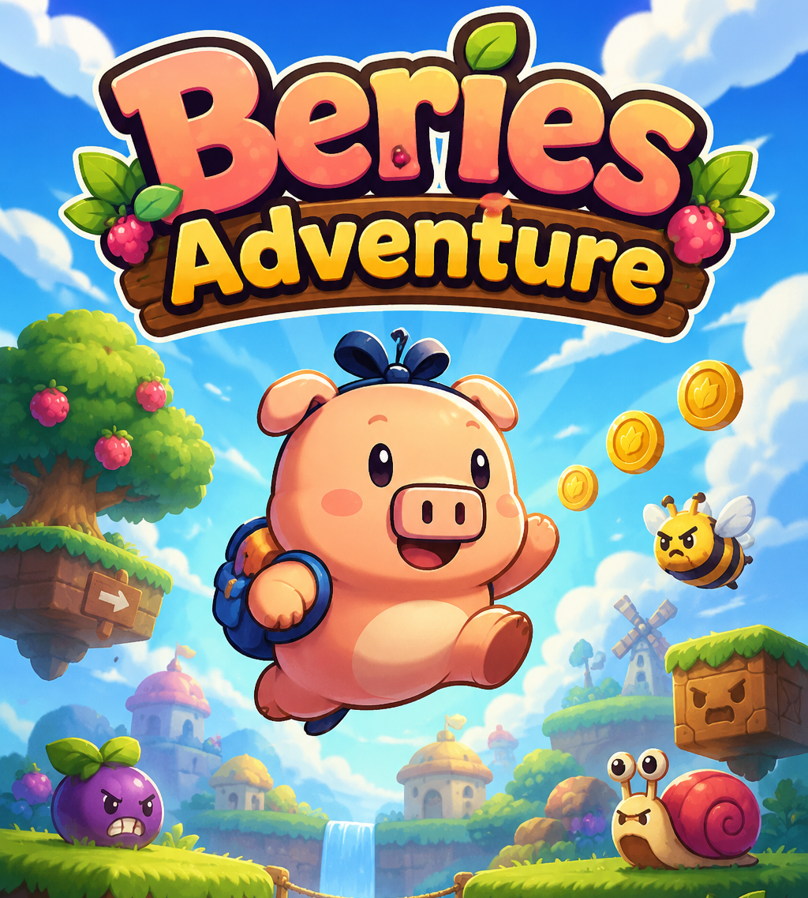

Astro PI - Gestor de Peticiones e Incidencias.
App diseñada en formato CRUD como sistema de ticketing PET-INC. Incluye inventario actualizable y panel de control para gestionar peticiones e incidencias.
v. 0.1


GymTrack - Diario de entrenamiento y rutinas.
Aplicación web para registrar entrenamientos, crear rutinas personalizadas y consultar el progreso diario del usuario.
Aun en desarrollo.


Berie's Adventure - Videojuego 2D Unity.
Proyecto fin de grado de un videojuego de plataformas 2D desarrollado con el motor Unity.
v. 1.1
Proyecto Ameba - Videojuego 2D Unity.
Videojuego 2D desarrollado en Unity, inspirado en The Binding of Isaac. Proyecto personal en curso.
Aun en desarrollo.